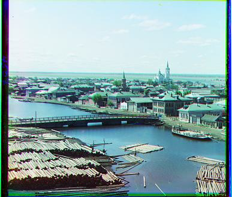

In this project, I reconstructed colored photographs from the Prokudin-Gorskii collection. Each scene contains three separate images, which are captured through the blue, green, and red color filters. These three channel images are stacked vertically and aligned to recreate the full-color RGB image.
Approach
For the exhaustive single-scale approach, I started by reading in the image and converting it to a double. The pixel values are normalized and within [0,1]. I then split the image into three equal parts, each representing one color channel (blue, green, and red). The blue channel is used as the reference channel. For each of the other two channels, I exhaustively search for the best alignment by shifting the channel within a specified range (-15 to +15 pixels in both x and y directions). In each shift, I use np.roll to translate the moving channel and evaluate alignment only over the true overlapping region so wrapped pixels don’t bias the score. For each possible shift, I calculated the image matching score between the shifted channel and the reference channel. I implemented both scoring metrics, the L2 norm/euclidean distance and the normalized cross-correlation. The L2 norm is the default metric, but for emir.tif, since it has strong brightness differences across channels, I switched to NCC and aligned on edge features instead of raw intensities. NCC is more robust in this case because edges are less affected by cross-channel brightness differences. The shift that minimizes L2/euclidean distance (or maximizes NCC) is considered the best alignment. After finding the optimal shifts for both the green and red channels, I combine them with the blue channel to create the final color image.
For large images (.tif files), the exhaustive approach was slow, so I implemented a coarse-to-fine pyramid search algorithm which downsamples the images by a factor of 2 until they are small enough. The images are aligned at the coarsest level and refined at progressively higher resolutions until I find the best shift.
Results: Single-Scale Method
Here are the reconstructed color images and their green and red offsets using the single-scale approach for the cathedral, monastery, and tobolsk images.
cathedral.jpgGreen offset: (5,2), Red offset: (12,3)monastery.jpgGreen offset: (-3,2), Red offset: (3,2)tobolsk.jpgGreen offset: (3,3), Red offset: (6,3)
Results: Pyramid Method
Here are the reconstructed color images and their green and red offsets using the pyramid approach for all of the example images.
cathedral.jpgGreen offset: (5,2), Red offset: (12,3)monastery.jpgGreen offset: (-3,2), Red offset: (3,2)

tobolsk.jpgGreen offset: (3,3), Red offset: (6,3)church.tifGreen offset: (25,4), Red offset: (58,-4)emir.tifGreen offset: (49,24), Red offset: (107,40)harversters.tifGreen offset: (59,16), Red offset: (124,13)icon.tifGreen offset: (41,17), Red offset: (89,23)italil.tifGreen offset: (38,21), Red offset: (76,35)lastochikino.tifGreen offset: (-2,-2), Red offset: (75,-8)lugano.tifGreen offset: (41,-16), Red offset: (92,-29)melons.tifGreen offset: (81,10), Red offset: (178,13)self_portrait.tifGreen offset: (78,29), Red offset: (176,37)siren.tifGreen offset: (49,-6), Red offset: (95,-25)three_generations.tifGreen offset: (53,14), Red offset: (112,11)
Results On My Own Images
Here are some more reconstructed images, for images of my choosing.
LakeGreen offset: (35,12), Red offset: (71,14)HouseGreen offset: (26,18), Red offset: (121,35)FlowersGreen offset: (49,-6), Red offset: (95,-25)
Bells & Whistles
Automatic Cropping: The borders of the images were having a negative impact on the score calculation, so I cropped the images by 10% on each edge to remove the noisy borders. This resulted in better alignments.
Automatic Contrasting: I used percentiles to (roughly) map the darkest pixel to 0 and the brightest pixel to 1.
emir.tif before edge croppingemir.tif after edge cropping
cathedral.jpg before edge croppingcathedral.jpg after edge cropping